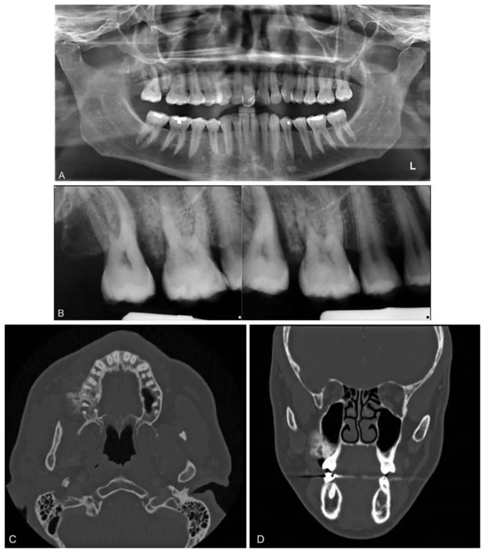
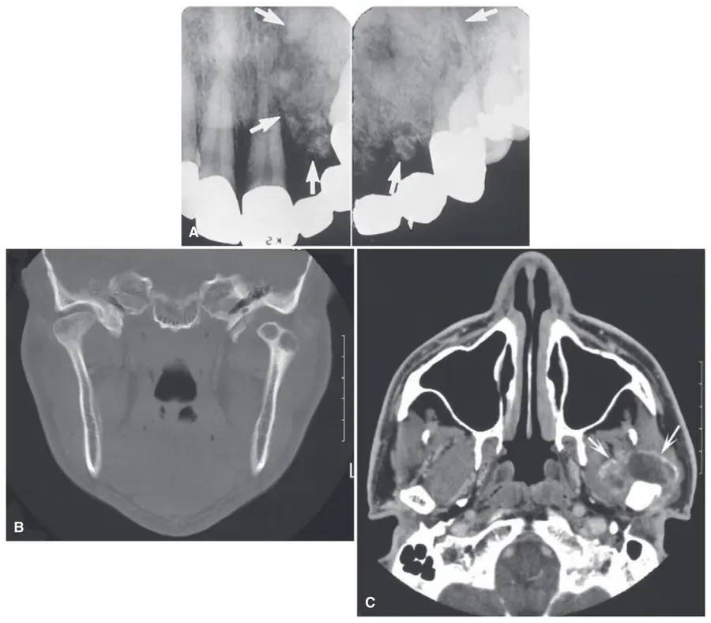

نسخه استخراجشده؛ ترجمه یا تأیید علمی انجام نشده است. وضعیت: captured
استئوسارکوم نئوپلاسم بدخیم استئوبلاستهاست که در آن استئوئید مستقیماً توسط سلولهای بدخیم ساخته میشود.

و دو زمینهای که «جالب»اند و در یونیتهای پیشین دیدی: این نئوپلاسمها میتوانند «درون بیماری پاژهی استخوان و دیسپلازی فیبرو پس از پرتودرمانی» پدید بیایند.
اعداد: استئوسارکوم فک بسیار نادر است و تنها حدود ۷٪ همهی استئوسارکومها را میسازد. در مردان دو برابر زنان.
حاشیه: «استئوسارکوم حاشیهی نامشخص و بدون کورتکس دارد.» و در ماگزیلا شایعترین محل زائدهی آلوئولار است؛ و در فکها ضایعه میتواند از خط وسط بگذرد.
و ساختار داخلیاش کاملاً متغیر است — این مهم است: «استئوسارکوم میتواند کاملاً رادیولوسنت، مختلط، یا رادیواوپک باشد، بسته به توانایی سلولهای بدخیم در تولید ماتریکس مینرالیزه.» الگوهای داخلی: استخوان گرانولر یا اسکلروتیک، پنبهمانند، رشتههای استخوانی، یا لانهی زنبور با تخریب معماری استخوانی مجاور. و در هر حالت، «ساختار ترابکولار طبیعی فک از بین میرود».
اثر بر ساختارهای مجاور: ضایعات مندیبل میتوانند کورتکس کانال مندیبولار را تخریب کنند؛ در ماگزیلا دیوارهی سینوس یا حفرهی بینی از دست میرود. و یک الگوی جایگزین: کانال میتواند بهطور متقارن پهن و بزرگ شود.
و دو نشانهی سطحی که در درس یکم دیدی، اینجا کاربرد پیدا میکنند: مثلث کدمن در لبهی پریوست بلندشده، و اسپیکولاسیون از مینرالیزاسیون در امتداد الیاف شارپی و عروق کوچک، که در بافت نرم مجاور هم دیده میشود.
و اثر بر دندان — نشانهی گرینگتون: پهن شدن غیرهممرکز فضای PDL، که «در سایر بدخیمیها از جمله کندروسارکوم هم دیده میشود». و سازوکارش: «سلولهای بدخیم به فضای PDL تهاجم میکنند، لامینا دورا و زائدهی آلوئولار را تخریب میکنند و تحلیل خارجی ریشه میسازند».
و افتراق — با یک محدودیت آشکار تصویر: «تفکیک استئوسارکوم از کندروسارکوم ناممکن است.» اگر هیچ ساختار استخوانی دیده نشد، به فیبروسارکوم هم فکر کن. و اگر الگوی سانری یا اسپیکوله در سطح استخوان دیده شد، متاستاز پروستات و پستان را هم در نظر بگیر.
و افتراق از ضایعات خوشخیم: فیبروم اوسیفایه و دیسپلازی فیبرو «بهتر مرزبندیشده از استئوسارکوماند، عموماً ساختار داخلی یکنواختتری دارند، و هر دو فاقد ویژگیهای تهاجمی و تخریبیاند». و سارکوم یوئینگ، پلاسماسیتومای منفرد و استئومیلیت برخی ویژگیها را با آن به اشتراک میگذارند — ولی «استئوسارکوم عموماً با نشانههای عفونت همراه نیست».
و درمان: رزکشن با حاشیهی وسیعی از استخوان طبیعی مجاور. ولی یک محدودیت واقعبینانه هست: چنین رزکشنی «در موارد ارتوپدی ممکن است، ولی در سر و گردن بهدلیل انبوه ساختارهای آناتومیک مهم مجاور پیچیده میشود». پرتودرمانی و شیمیدرمانی عمدتاً برای کنترل انتشار متاستاتیک یا تسکین به کار میروند.
کندروسارکوم خطرناکترین «مقلد خوشخیم» این یونیت است. «کندروسارکومها نئوپلاسمهای کندرشدی هستند و نشانههای رادیولوژیکشان میتواند گمراهکننده و بهظاهر خوشخیم باشد.»

محل: در مندیبل و ماگزیلا با فراوانی برابر. ضایعات ماگزیلا معمولاً در ناحیهی قدامی — جایی که ممکن است غضروف باشد؛ و در مندیبل در ناحیهی کندیل و کرونوئید و گاهی سمفیز.
حاشیه: عموماً گرد، بیضی یا لوبوله با مرزهای واضح و گاهی کورتیکه. گاهی محیط با استخوان طبیعی مجاور ادغام میشود، و گاهی ظاهر سانری یا مو روی سر دیده میشود. و بهندرت، ظاهرهای تهاجمیتر با حاشیهی نامشخص و انفیلتراتیو.
و امضای داخلی کندروسارکوم — واژهای که باید حفظ کنی: «کندروسارکومها بهندرت رادیولوسنتاند و معمولاً نوعی کلسیفیکاسیون داخلی نشان میدهند.» و وقتی سلولهای بدخیم مینرالیزاسیون تولید میکنند، الگوی مرکزی اوپک را «فلوکولانت» (flocculent) توصیف میکنند — «با ظاهر دانههای برف». و گاهی بزرگنمایی این نواحی، یک نیدوس رادیولوسنت مرکزی را آشکار میکند که «احتمالاً غضروف احاطهشده با کلسیفیکاسیون است».
و رفتارش بر استخوان، باز هم گمراهکننده: «کندروسارکوم، بهدلیل رشد نسبتاً کند، اغلب مرزهای کورتیکال طبیعی را متسع میکند نه اینکه سریعاً تخریبشان کند.» در مندیبل مرز تحتانی یا زائدهی آلوئولار میتواند بهشدت متسع شود و همچنان پوشش کورتیکال خود را حفظ کند.
و در ناحیهی TMJ: میتواند حفرهی گلنوئید و برجستگی مفصلی را ریمادل کند، فضای مفصلی را پهن کند و گردن کندیل را ریمادل نماید؛ و فرسایش حفرهی مفصلی هم ممکن است.
و سارکوم یوئینگ — نئوپلاسم سلول گرد کوچک که «نئوپلاسم استخوانهای بلند است و بسیار بهندرت در فکها رخ میدهد». و مهمترین ویژگی جمعیتیاش: «بدخیمی جوانان» است. در فک، موارد مندیبل بیشتر از ماگزیلا و ضایعات معمولاً مرکزاً در فضاهای مغز استخوان پدید میآیند. ساختار داخلیاش عمدتاً استئولیتیک است.
و دو افتراق سارکوم یوئینگ: استئومیلیت برخی ویژگیها را با آن مشترک دارد — ولی معمولاً علتی قابل رؤیت و نشانههای عفونت دارد. و هیستیوسیتوز سلول لانگرهانس موضعی مزمن فک هم میتواند مشابه باشد؛ یوئینگ در فکها معمولاً استخوانسازی نو پریوستئال لایهای نمیسازد، در حالی که هیستیوسیتوز میسازد.
و یک محدودیت پژوهشی صادقانه: «موارد سارکوم یوئینگ فک و صورت در هیچ مرکز واحدی بهقدر کافی زیاد نیستند» — یعنی دانش ما دربارهی رفتارش در فک محدود است.